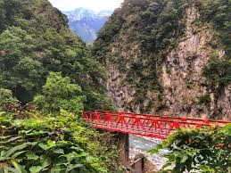

Tajwan to wyspa położona w Azji Wschodniej, znana z nowoczesnych miast, pięknych plaż i górzystego krajobrazu. Jest także ważnym ośrodkiem przemysłowym i technologicznym.

Długość: 157,3 km
Typ: Most kolejowy
Lokalizacja: Tajwańska linia szybkiej kolei
Drugi najdłuższy most na świecie, także obsługujący szybkie koleje, został zaprojektowany, aby zminimalizować ryzyko uszkodzeń spowodowanych trzęsieniami ziemi.